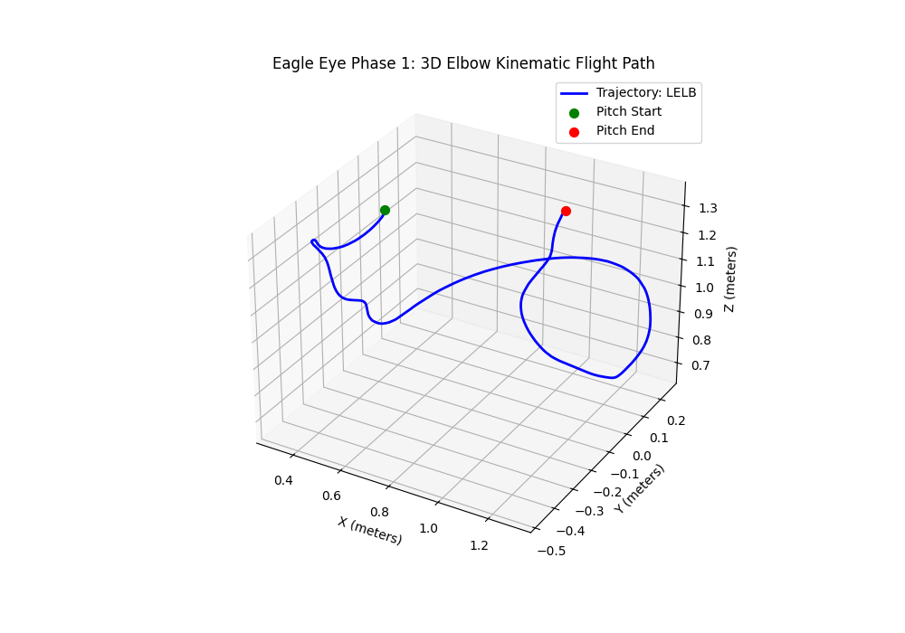

A signal-processing pipeline for estimating elbow joint stress in baseball pitchers, validated against motion-capture ground truth.
Anirudh Khandrika · University of Michigan, BA + BSE 2027 · ksablue@umich.edu · github.com/signalprozilla/eagle-eye
Two-dimensional video analysis cannot recover the three-dimensional joint kinematics that drive pitching injuries. MLB recorded its highest pitching-injury rate in modern history in 2023, with the largest share concentrated in elbow valgus stress, the load that fails the ulnar collateral ligament. Existing video-only analysis pipelines systematically underestimate that load because they cannot resolve joint position through clothing and self-occlusion. Eagle Eye is a C++ pipeline that closes the gap: it computes 3D joint kinematics and inverse-dynamics estimates of elbow varus moment from raw motion capture, validates them against published ground truth, and lays the foundation for a Phase 2 video-only estimator.
The Phase 1 pipeline ingests synchronized motion capture from the OpenBiomechanics Project (Driveline Baseball R&D) in C3D format, constructs anatomical segment frames for the humerus and forearm following the International Society of Biomechanics joint coordinate system conventions [1], and extracts elbow flexion, valgus carrying angle, and pronation-supination via Euler decomposition of the relative segment rotation matrix.
Marker position trajectories are filtered with a 20 Hz low-pass Butterworth filter applied in a zero-phase forward-backward configuration before differentiation. The choice of low-pass filtering before numerical differentiation is essential: differentiation has a frequency response proportional to jω, so double differentiation amplifies high-frequency noise by a factor of ω². High-frequency tracking noise that is negligible in the raw position signal becomes dominant in the joint acceleration signal without filtering [2].
Peak elbow varus moment is computed via a simplified single-segment inverse-dynamics model, M = Icom · α, where the segment moment of inertia is derived from anthropometric regression on each pitcher's body mass and forearm length [3]. The translational-acceleration-of-COM term in the full Newton-Euler formulation is omitted in Phase 1; its contribution is characterized in the analysis below.
The pipeline was validated against the OpenBiomechanics Project published elbow varus moment values across 205 pitches from elite-level subjects. Performance:
A quarter of the pitches in the cohort fall within 9.3% of the OBP ground truth, with the median pitch within 18.4%. The positive median signed bias is consistent with the simplified single-segment model functioning as a lower-bound estimator of true joint moment, as the omitted translational-acceleration term contributes positively to peak varus moment during high arm-acceleration phases.

The +12.7% median signed bias has a direct physical interpretation. The simplified inverse-dynamics model captures the rotational inertia contribution to elbow varus moment, Icom · α, but omits the translational contribution from linear acceleration of the segment center of mass, m · r × acom. Published biomechanics literature places the translational term's contribution at roughly 20–30% of total elbow varus moment in pitching [4]; the observed 13% median bias is consistent with this contribution, weighted by the body-mass distribution of the OBP cohort.
Per-pitch error stratification reveals two systematic dependencies. First, lighter pitchers exhibit larger absolute errors than heavier pitchers, consistent with the omitted translational term contributing proportionally more at higher arm angular accelerations. The body-mass dependence mirrors the youth-versus-professional elbow varus moment scaling reported by Fleisig et al. [4], where pediatric peak moments (~27 N·m) and professional peak moments (~64 N·m) differ by a factor consistent with linear scaling in segment mass but not in arm angular kinematics. Second, breaking-ball pitches exhibit larger errors than fastballs, consistent with a rigid single-segment forearm model's inability to represent the pronation-supination dynamics that distinguish breaking-ball mechanics. The single-marker wrist tracking used in Phase 1 is a secondary contributor; resolving it is part of Phase 2.
Three components address the limitations characterized above. A full Newton-Euler recursive inverse-dynamics chain with hand-and-ball mass at the distal end will close the systematic underestimate by adding the omitted translational term. A multi-segment forearm model with explicit pronation tracking will address the breaking-ball error mode. Synthesized 2D occlusion of the mocap markers combined with an inverse-kinematics back-projection, using confidence-weighted reprojection residuals subject to anatomical-prior constraints, will produce the headline Phase 2 deliverable: the per-pitch Stress Delta, the gap between video-derived and mocap-derived elbow varus moment estimates.